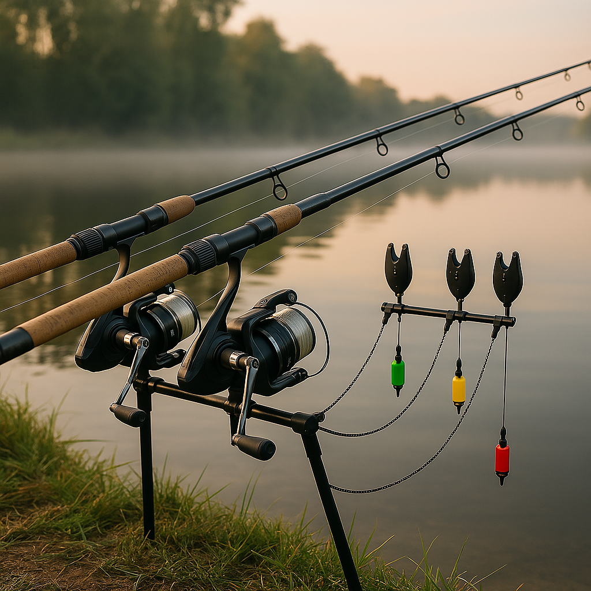

Fishing Experience

Fishing is a calming activity that helps people escape from the noisy and fast-paced world. Time spent near the water promotes relaxation and mental clarity.
The quiet surroundings, fresh air, and natural sounds create a peaceful atmosphere. Fishing allows people to slow down and enjoy the moment.
For many, fishing is more than a hobby – it is a way to relax, recharge, and reconnect with nature.